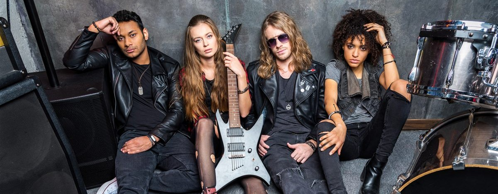
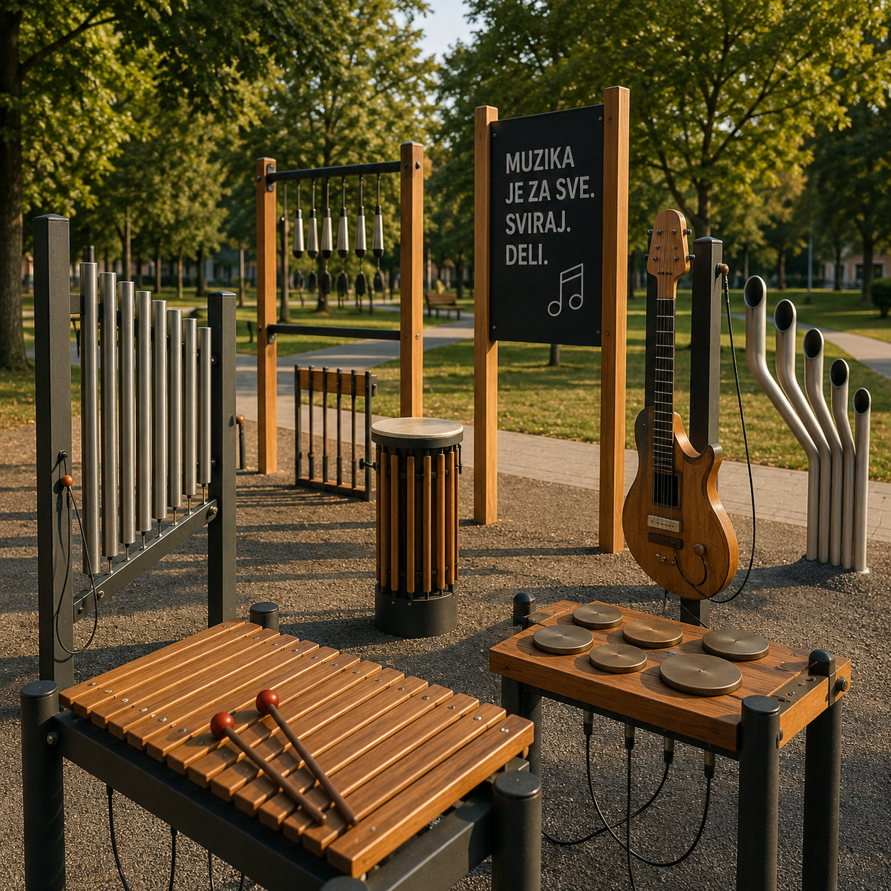

sledeći događaj
DANGUBE
ČETVRTAK, 10. SEPTEMBAR 2026.
Žanr: rock. Lokacija: Stellina.
feat. Mare tzarr
Pokrećemo serijal humanitarnih svirki u kojima se oko iste ideje okupljaju različiti muzičari, žanrovi, klubovi i publika. Svaka nova postava donosi drugačiji zvuk, ali cilj ostaje isti: da kroz muziku podržimo konkretne stvari koje ostaju zajednici.
Prva ideja je stvaranje javnog muzičkog prostora u Šapcu — mesta sa instrumentima na otvorenom, dostupnog deci, mladima i svima koji žele da se susretnu sa muzikom van sale, škole ili kluba.
Ne pravimo serijal samo zbog nastupa. Pravimo ga zbog ljudi koji će taj prostor koristiti, zbog klinaca koji će prvi put udariti ritam, zbog onih koji će zastati, probati, odsvirati nešto svoje. Žanrovi će se menjati, muzičari će dolaziti iz različitih priča, ali razlog ostaje isti: da zajedničkim zvukom napravimo nešto što traje.

Donacije idu na izgradnju outdoor muzičkog parka. Svaka transakcija je dokumentovana, a račun i izveštaj su otvoreni za proveru.
organizacija koja prima sredstva
TODO: naziv organizacije
namenski račun
TODO: broj računa

sledeći događaj
Žanr: rock. Lokacija: Stellina.
feat. Mare tzarr
naredna
naredna
naredna
Dođi na svirku
Dođi na svirku, ponesi prijatelje i podrži energiju u živo. Prihod od ulaznica i donacija ide u fond.
Doniraj
Ubrzaj izgradnju parka i kupovinu instrumenata. Svaka donacija ide direktno na javni račun.
Podeli objavu
Objavi priču ili video na mrežama sa #TODO. Najveća snaga je u zajednici koja širi informaciju.
Podrži kao firma
Partnerstva i sponzorstva omogućavaju veći domet i bolju opremu za park.
Pomozi oko organizacije
Volontiraj za logistiku, promociju i događaje. Svaka ruka znači da smo bliži cilju.
TODO: šesta opcija
Sadržaj stiže uskoro.
Podrška je važna. Sponzori pomažu opremu, promociju i mogućnost da serijal ostane otvoren za zajednicu.
TODO: logo sponzora
TODO: logo sponzora
TODO: logo sponzora
posvojeni instrumenti
ksilofon
TODO: ime donatora
tongue drum
TODO: ime donatora
metalofon
TODO: ime donatora
Donatori koji žele da doprinesu više mogu dati ime instrumentu u parku. Outdoor ksilofon, tongue drum ili metalofon — otporni na vreme i vandalizam — tada zauvek nose njihovo ime, vidljivo svima koji dođu da sviraju.
Brzi video zapisi i snimci sa proba pokazuju energiju i razlog zbog kojeg serijal postoji.
Press kit je spreman za korišćenje: kratki tekstovi, fotografije i lista partnera.